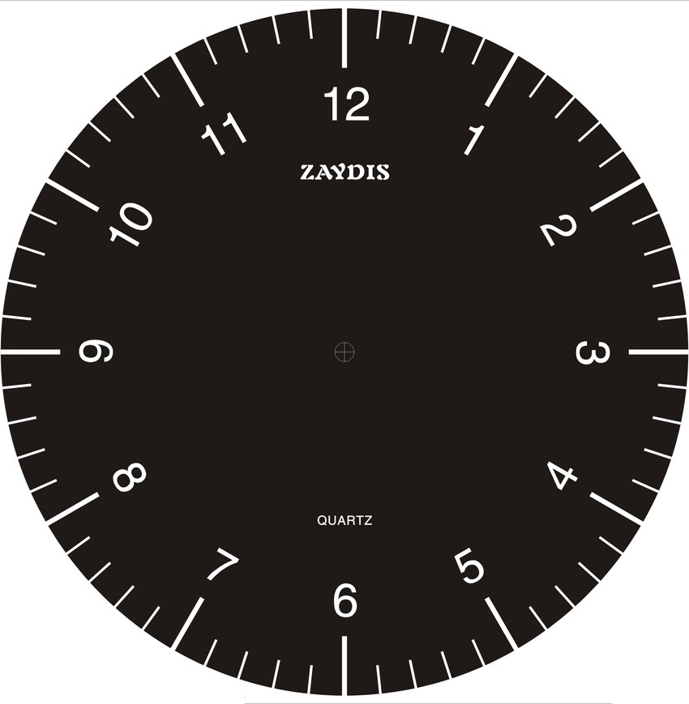

时间系统的三大模型
实现模型——时间数据
对于计算机来说时间只是一段数字形式的数据，让用户直接输入时间数字表达了时间的实现机制
月份
日期
小时
分钟
但这种交互不符合用户对时间的心理模型、不便于操作，并容易发生输入格式不符的错误。
心理模型——日历与时钟

长期以来人们是通过时钟与手表来获取时间，对于时间的心理认知主要是表盘上的时针分针，因此表盘是用户对于时间的心理模型。
长期以来人们是通过日历来获取日期，对于日期的心理认知主要是日历方格上的方格，因此日历是用户对于日期的心理模型。
表现模型——设计方案
timer
receipt